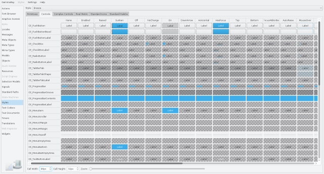

Overview
The Styles tool is used for working on and debugging custom QStyle sub-classes.

This tool allows you to look at:
- style primitives in all states,
- controls in all states,
- complex controls and their sub-element areas,
- built-in standard pixmaps,
- and the style-defined QPalette.
It also lets you view and edit style pixel metrics.